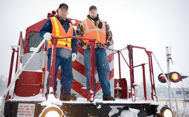

Ryan's Past, Present, and Future
Past
I was born in Tampa, Florida on May 6th 2001. When I was about 2 our family
moved to a different house, but still in Tampa.That is where we lived for
about 6 years, or until I was 8 years old.Then one day my family went on a bike
ride where we found our new house that was less than a mile from our current one.
When we bought it, it took about 6 months to renovate and we had to live in an
apartment durring that time. When it was done we lived there for about 5 years,
and then my Dad lost his job and after a few months of looking he found one here
in Greenville, South Carolina, and we are still here.
Things that have happened to me over the years
- Moved to South Carolina
- Climbed a mountain
- Almost failed Geometry
- Got sick for like 3 weeks
- Ran out of things to put on this list
Present

My family is well, a very interesting one... We all like to do different things.
My dad likes to go on hikes and go kayaking and all these outdoor activities. My
mom likes to do what the kids like to do. My sister likes to play soccer and play
with her friends. I like photography, I like to take pictures of; trains, flowers
animals, insects, my sister playing soccer, and nature.
My current interests include photography and videography. I like to take pictures
the things that I explainded in the paragraph above. Last summer I saved up all
my money to buy a camera that I really wanted, it was the
Canon Powershot SX410IS. It takes very good pictures with a 18 MP sensor. At
first I did not realize that it could take pictures with filters on them for
example; Vivid colors, Monochrome (black and white).
Future
My future plans are to finish high school with at least a 3.0 GPA. Then
get into a good college (I'm not sure which one yet) for about 2 years. After that
go to the Okeefenokee Technical College to become a train conductor and eventually
an engineer. If I can't get into the engineering job I would want to be a photographer
for a railroad or for Trainz Magazine. In the end I hope to retire with some money
to go on trips around America being a photographer.
My bucket list
Where do I see myself in the future...
